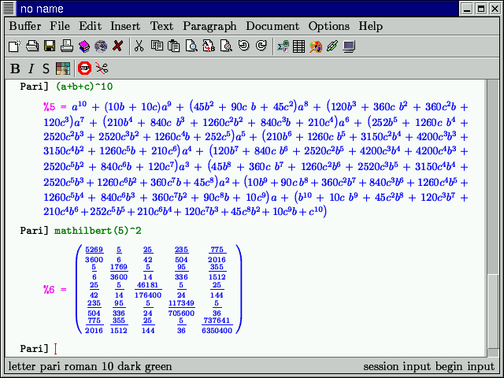

GNU TeXmacs screen samples

Copyright (C) 1999, 2000 by Joris van der Hoeven.
This webpage is part of GNU TeXmacs and the larger GNU project. Verbatim copying and distribution of it is permitted in any medium, provided this notice is preserved. For more information or questions, please contact Joris van der Hoeven.
Free Software Foundation, Inc., 59 Temple Place - Suite 330, Boston, MA 02111, USA